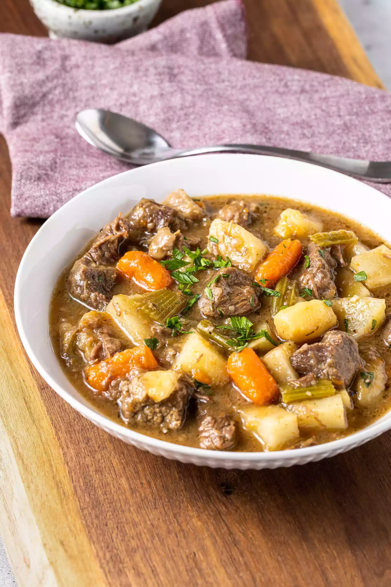

Easy Beef Stew

Description
This easy beef stew recipe gets a streamlined edit, eliminating the need for
tediously browning individual pieces of beef. One pot and two hours are all
you need for several days’ worth of hearty, comforting beef stew.
Ingredients
- 3 pounds well-marbled beef chuck stew meat, cut into 1-inch pieces
- 3 teaspoons kosher salt, divided, plus more to taste
- 3 tablespoons olive oil
- 5 ribs celery, cut into 1-inch pieces (about 2 cups)
- 1 medium onion, chopped (about 1 cup)
- 4 medium carrots, peeled and cut into 1-inch pieces (about 2 cups)
- 2 medium parsnips, peeled and cut into 1-inch pieces (about 1 cup)
- 1/2 teaspoon freshly ground black pepper
- 1 tablespoon finely chopped fresh thyme leaves
- 1 tablespoon all-purpose flour
- 4 cups beef broth
- 2 cups water
- 1 tablespoon balsamic vinegar
- 1 tablespoon Worcestershire sauce
- 1/4 cup chopped fresh parsley leaves
Steps
- Cook the beef
- Add the vegetables
- Add the broth and simmer
- Add the potatoes and finish